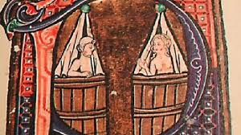
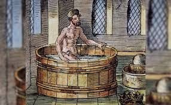
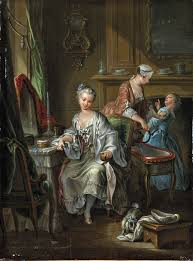
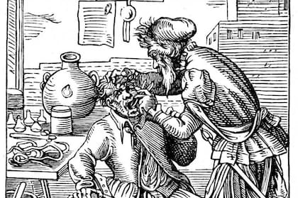
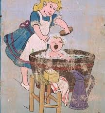

Edad Media
En la Edad Media en Europa, el manual de dietética y tratado de higiene de referencia era el Tacuinum sanitatis del que los médicos extraían consejos generales de higiene, adaptados a las configuraciones astronómicas, las condiciones climáticas y la edad de los pacientes. La higiene doméstica medieval también concierne a las comidas: en el siglo XV aparece una auténtica guía de buenas costumbres, Les Contenances de la table, que recomienda, en particular, lavarse las manos antes de comer o limpiarse la boca antes de beber.
Se trata de una obra impresa varias veces en el siglo XV y principios del XVI. Se trata de un folleto sobre pautas de conducta y buenos modales en la mesa para los niños, escrito en verso para facilitar su memorización en la mejor tradición medieval. Se trata de un prospecto, lo que explicaría su extrema rareza en la actualidad. Este texto tendrá varias ediciones impresas incluida una hacia 1503, en 1816 hacia 1850. La alimentación es un capítulo esencial del arte médico y muchos tratados medievales sobre arte culinario no son más que adaptaciones del libro Régimen del Cuerpo del médico italiano Aldebrandin de Siena. Los baños populares o refinados y los baños públicos (hombres y mujeres que se bañaban en bañeras compartidas) tuvieron un auge en el siglo XIII. En el siglo XIV, la Iglesia católica de Europa central y occidental prohibió su práctica y buscó cerrar los establecimientos que la permitían. La iglesia de entonces tampoco estaba de acuerdo con bañarse en el río y recomendaba sobre todo las abluciones, siendo la única agua pura el agua bautismal destinada a la salvación del alma. Otra de las razones aducidas para prohibir los baños, los baños públicos y los baños fluviales es que se sospechaba que propagaban la peste (trauma resultado de la epidemia de Peste negra de mediados del siglo XIV, los médicos temían que se transmitiera por el agua que se infiltraba a través de los poros de la piel y era portadora de todo tipo de gérmenes) y que los baños eran asimilados a lugares de libertinaje, a veces con justificación, aunque este libertinaje no impida la higiene corporal: su cierre será paulatino durante los siglos XVI y XVII.
Estas prescripciones religiosas explican por qué en los siglos XIV y XV aparecían en las casas adineradas los “estuves” o baños privados, las “cubas de baño” (tinajas circulares de madera de paredes dobles, con paredes revestidas con lonas para evitar astillas) o la fuente mural y, más raramente en las casas más modestas (porque el baño caliente seguía siendo un lujo caro), las bañeras y los lavabos, más bien reservados al lavado de la ropa. El baño privado, sin embargo, seguía siendo esencialmente un privilegio de los ricos y un signo de hospitalidad.
Siglos XVII-XVIII
En el siglo XVII la higiene personal era seca (excepto las manos y la cara): las partes sucias del cuerpo se frotaban con un paño limpio. Durante el siglo XVII continuó el “baño seco” pero poco a poco fue reapareciendo el uso del agua. Los primeros gabinetes de baños se desarrollaron entre gente rica y refinada donde la blancura del lino destacaba en el cuello y las muñecas. El baño frío se consideraba higiénico no por su poder limpiador sino por su poder tonificante, el baño caliente seguía siendo sólo una práctica médica. La burguesía denunció el carácter enmascarante de los perfumes y cosméticos de la nobleza, y se hizo más ligero el uso de maquillajes blanqueadores de la piel.
A partir del siglo XVIII, que vivió el terror de los miasmas, filósofos y médicos se centraron en cuestiones de higiene individual y colectiva, precursora de la salud pública. La higiene también se refiere a la “limpieza de la parte inferior” y luego a la limpieza de la piel, que se logra enteramente mediante el lavado. La reaparición de los establecimientos balnearios y la multiplicación de los espacios especializados (baños, bidés, letrinas colectivas, más simplemente en castillos o abadías, pero también en casas modestas) está ligada al desarrollo de la noción de privacidad.[22] Las ricas mansiones privadas fueron equipadas gradualmente con baños. En Francia, el 10% de estas residencias adineradas disponían de una habitación de este tipo en 1750, y a finales de siglo había alrededor del 30%. Las grandes ciudades se equiparon en esta época con alcantarillados subterráneos.
Revolución industrial
La higiene y los cuidados comenzaron a ser una preocupación para el Estado a partir de la Revolución industrial, en la que se precisó sanear las fábricas, desde el siglo XVII. En las ciudades portuarias como Buenos Aires surgió esta necesidad colectiva a partir de las malas condiciones de higiene del puerto, en el que abundaban ratas y todo tipo de enfermedades. El primero que valorizó la higiene para evitar infecciones fue el médico Ignaz Semmelweis, quien creó el procedimiento antiséptico en 1847. Posteriormente, gracias a los experimentos de Luis Pasteur que probaron la teoría germinal de las enfermedades infecciosas, las prácticas higiénicas cobraron suma importancia en las intervenciones médicas y la vida cotidiana de la población como sinónimo de salud.
A partir de mediados de la década de 1850 comenzó a adquirir importancia el movimiento "higienista", por lo cual muchas personalidades influyentes de la medicina en Argentina pasan al ámbito político; por ejemplo, Guillermo Rawson, político que llegaría a altos puestos; y, antes de finalizar el siglo, el doctor Eduardo Wilde. Ambos participaron activamente en las decisiones, transformaciones a nivel de estrategias de salud y con una alta participación en cuestiones nacionales argentinas. En países europeos, como Inglaterra, se dieron movimientos semejantes que comenzaron con la epidemiología, inaugurada por el estudio de John Snow sobre el cólera y el río Támesis, también a mediados del siglo XIX. En Estados Unidos, ya en la primera década del siglo XX, se inauguró el movimiento de Higiene Mental, que dio inicio a lo que luego se llamó salud mental mediante la acción de Clifford Beers, quien denunció las condiciones higiénicas de los hospitales psiquiátricos.
Era moderna (siglo XIX hasta la actualidad)
• Revolución científica: El siglo XIX marcó un punto de inflexión con la comprensión científica de los microbios y su relación con las enfermedades, gracias a científicos como Louis Pasteur.
• Higiene pública y doméstica: Se desarrollaron sistemas de saneamiento público como agua corriente y alcantarillado en las ciudades. Esto se extendió al ámbito doméstico en el siglo XX con electrodomésticos.
• Evolución de las prácticas: Hoy en día, se cuestionan los niveles de higiene extrema y se investigan nuevos hábitos basados en la evidencia científica.